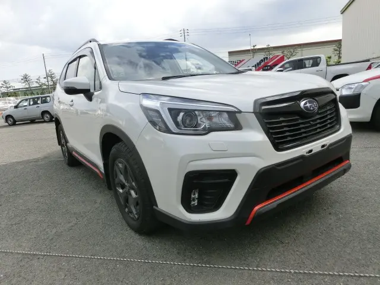

Engine
2.0LVehicle details
Subaru Forester X-Break 2019
This page is built from the current Lota Motors product title and live listing cues, redesigned into a cleaner vehicle detail experience.

Back to CarsTechnical specifications
A cleaner breakdown of the key Forester details.
Year
2019Mileage
64,000 kmsTransmission
AutomaticFuel Type
PetrolBody Type
SUVDrive Type
AWDSteering
RightDescription
The key visible cues from Lota's live stock page, organized more clearly.
Trim identity
The live product title clearly identifies the Forester as the X-Break variant.
Model year
The listing is presented as a 2019 vehicle in the current Lota Motors stock flow.
Customer flow
The redesign gives the Forester its own dedicated page so the full enquiry journey can happen around the vehicle itself.